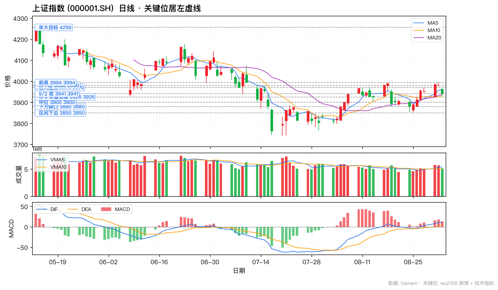
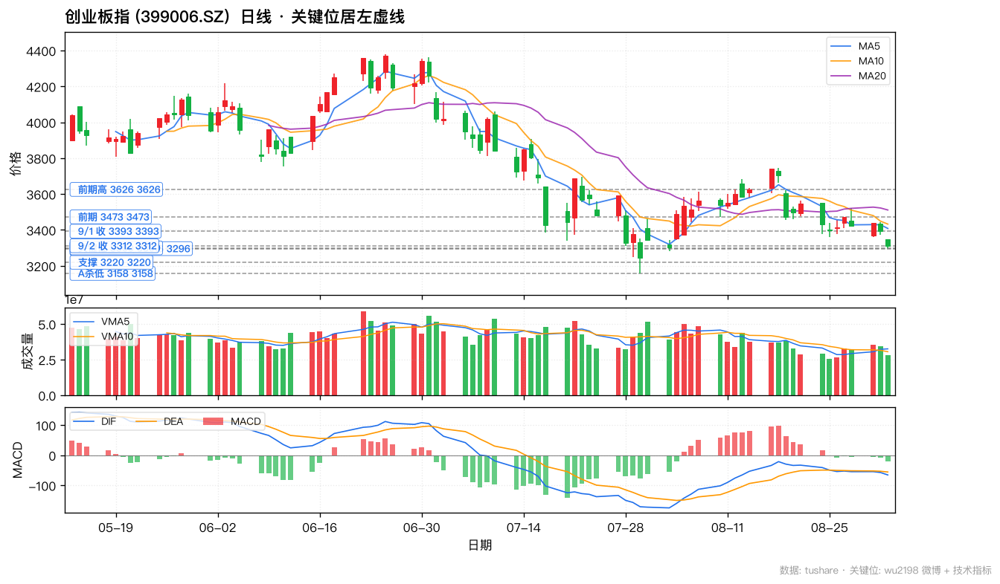
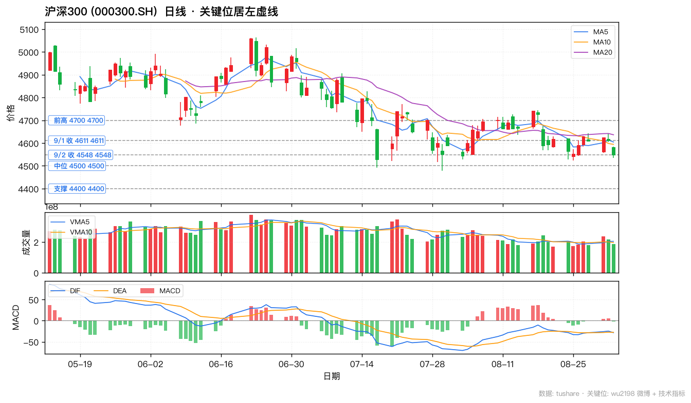
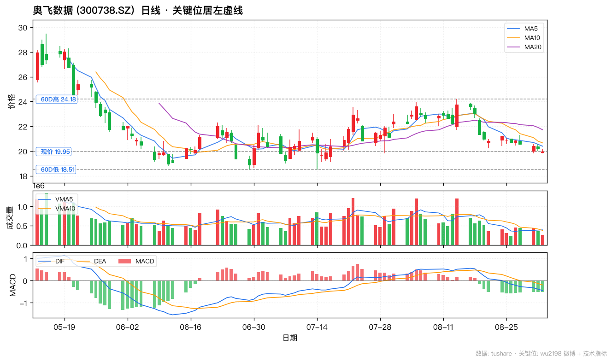
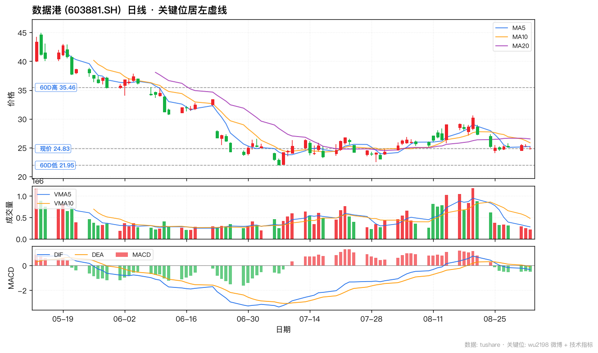
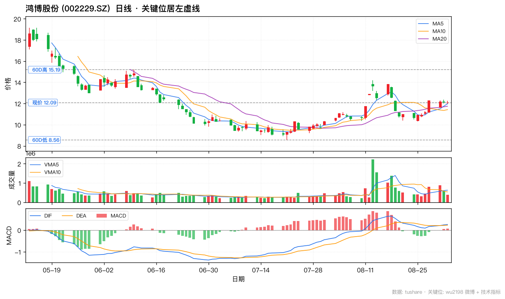
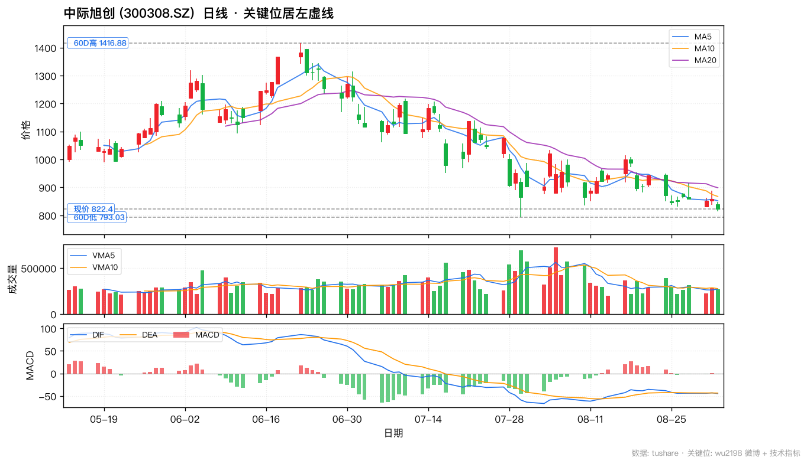
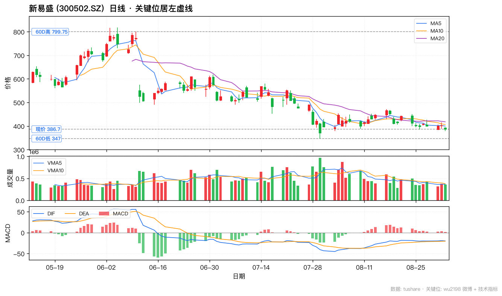
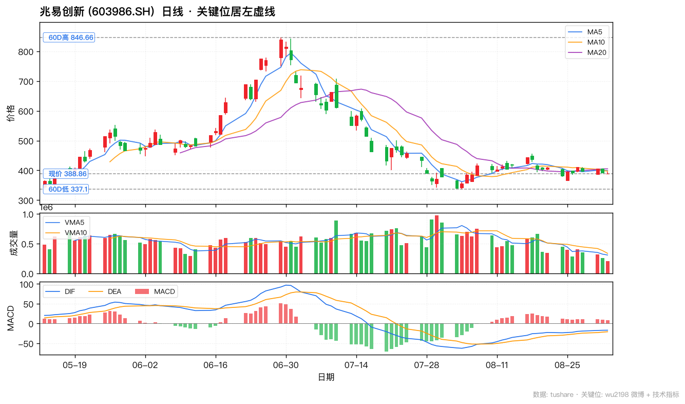

9/2 共抓取 10 条非置顶微博,其中 6 条带操盘信号。博主 9/2 立场:🟡 偏防御 · 多看少动 · 关注明日 3926 得失(15:04 「今天收 3941, 明天注意看 3926 得失」 9132 综合分 + 14:44 「要耐得住寂寞」 8843 赞 + 13:56 「多空双方小幅震荡,无法玩」 7538 赞)。当日 1 条新点名:🆕 14:05 算力租赁龙头拉红(博主主动点名板块信号,9/2 唯一明确的板块催化)。9/2 17:46 戴尔 FY27Q2 财报:AI 优化服务器营收 164 亿美元 +89%, ISG 总营收 318 亿 +89% — 印证 AI 算力产业链高景气延续,与 9/2 14:05 算力租赁龙头拉红形成主线共振。
| 时间 | 信号 · 置信 | 互动 | 操盘信号 | 内容 |
|---|---|---|---|---|
| Wed Sep 02 17:46 | 🟢 多 · 高 | R:9 C:59 L:2331 | — | 戴尔科技发布的2027财年第二季度财报显示，公司二季度实现营收470亿美元，同比增长58%；非GAAP摊薄每股收益7.04美元，同比增长203%。基础设施解决方案集团(ISG)营收318亿美元，同比增长89%。其中，AI优化服务器营收164亿美元，传统服务器及网络设备营收105亿美元，同比增长122%；存储营收49亿美元，同 ...全文 |
| Wed Sep 02 15:37 | 🟡 中性 · 中 | R:8 C:136 L:4498 | — | #伊朗打击三国美军基地#波斯一定要硬气啊！ |
| Wed Sep 02 15:04 | 🔴 空 · 高 | R:37 C:635 L:7825 | — | 今天收3941点……明天注意看3926得失……收到请回复666或者点赞支持一下！ |
| Wed Sep 02 15:02 | 🔴 空 · 高 | R:9 C:92 L:5170 | — | 截止15:00两市成交了18203亿元，有3901只个股下跌，大盘资金流出666亿元，量能比上一交易日减少2316亿元！ |
| Wed Sep 02 14:50 | 🔴 空 · 中 | R:9 C:88 L:5439 | — | 日本股市跌1889点，下跌2.85%。韩国股市下跌3.99%。 |
| Wed Sep 02 14:44 | 🟡 中性 · 高 | R:24 C:384 L:8051 | — | 要耐得住寂寞！ |
| Wed Sep 02 14:23 | ⚪ 无关 · — | R:10 C:379 L:7270 | — | 死鬼，好软哦！ |
| Wed Sep 02 14:05 | 🟢 多 · 高 | R:7 C:118 L:6998 | — | 算力租赁龙头出现拉红！ |
| Wed Sep 02 13:56 | 🔴 空 · 中 | R:9 C:163 L:7203 | — | 多空双方小幅震荡，无法玩！ |
| Wed Sep 02 13:20 | 🔴 空 · 高 | R:26 C:604 L:9655 | — | 创业板指数早盘试探了3296点，下午注意看3300得失.......明白666 |
核心标的: 奥飞数据 (300738) / 数据港 (603881) / 鸿博股份 (002229)
博主 9/2 14:05 主动点名:「算力租赁龙头出现拉红!」 — 9/2 全天 3901 只个股下跌的弱势市场中,算力租赁是博主明确点出的唯一异动板块。结合 9/2 17:46 戴尔 FY27Q2 财报:AI 优化服务器营收 164 亿美元 +89%、ISG 营收 318 亿美元 +89%、存储营收 49 亿美元, 印证 AI 算力需求高景气延续。逻辑:① 算力租赁/IDC 是 AI 算力产业链最直接受益环节, 模型训练/推理需求驱动 GPU 服务器和数据中心扩张 ② 奥飞数据/数据港/鸿博股份是 A 股算力租赁一线, 与英伟达/AMD/国产 GPU 厂商深度合作 ③ 9/2 大盘弱势(3941.39 -0.97%, 创业板 -2.39%), 算力租赁抗跌领涨, 验证主线地位 ④ 博主 7-8 月持续跟踪算力租赁主线, 多次发文提示。9/3 投资策略:算力租赁主线 9/2 异动, 9/3 关注持续性, 回调可低吸龙头(奥飞数据/数据港/鸿博股份)。
核心标的: 中际旭创 (300308) / 新易盛 (300502)
戴尔 9/2 17:46 财报显示 AI 优化服务器营收 164 亿美元 +89%, 传统服务器 +122%, 存储 49 亿 → AI 数据中心网络升级需求强劲, 800G/1.6T 光模块直接受益。逻辑:① CPO (共封装光学) 是 AI 数据中心网络升级必经之路, 单台 AI 服务器需要 8-16 个光模块, 算力扩张直接拉动光模块需求 ② 中际旭创作为 800G/1.6T 光模块全球龙头直接受益, 8/22 业绩营收 417.78 亿+182% 净利 136.51 亿+242% 业绩兑现 ③ 新易盛是光模块一线, 海外云厂客户深度合作 ④ 9/2 中际旭创收 822.40(-4.29%)、新易盛收 386.70(-4.00%) 跟随大盘回调, 但 60D低 793/347 附近有强支撑, 等回调到位再加仓 ⑤ 博主 9/2 14:44「要耐得住寂寞」 → 弱势市场不追高, 等回调。
核心标的: 兆易创新 (603986)
戴尔 9/2 17:46 财报显示 存储营收 49 亿美元, AI 算力对 HBM/DDR5/NAND 需求强劲。博主 8/17 17:01 提及「长鑫今天收在 61.80 元,涨幅 12.00%」+ 8/17 20:20「闪迪、美光……盘前涨 4% 左右」。逻辑:① AI 训练对 HBM 需求强劲, HBM3e 单价是 DDR5 的 5-10 倍 ② DDR5/NAND 周期反转, 2026Q2-Q3 持续涨价 ③ 国产替代主线(长鑫/长存技术突破, 兆易创新深度参与) ④ 兆易创新 9/2 收 388.86(-1.05% 抗跌), 60D高 846.66 / 60D低 337.10, 处于中位区间, 业绩兑现延续 ⑤ 博主 9/2 14:44「要耐得住寂寞」 → 不追高, 关注 60D低 337 附近支撑。



博主看点: 算力租赁 / IDC (博主 9/2 14:05 明确点名) · 9/2 弱势市场算力主线抗跌 · 戴尔财报印证需求



博主看点: 光模块 / CPO (戴尔财报印证 AI 算力需求) · 9/2 弱势市场算力主线抗跌 · 戴尔财报印证需求


博主看点: 存储芯片 (戴尔存储 + 长鑫概念 · 算力硬件) · 9/2 弱势市场算力主线抗跌 · 戴尔财报印证需求

博主 9/2 核心立场综合:
📌 博主风控姿态:9/2 博主给出收盘复盘 (15:04 7825 赞 全场最热) + 操作心态 (14:44 8051 赞) + 外盘速报 (14:50 5439 赞) + 资金面 (15:02 5170 赞) + 算力点名 (14:05 6998 赞) + 创业板关键位 (13:20 9655 赞 全场最热) 6 类信号。这是缠论大师的典型防御+主线操作:大方向坚定(4256), 小节奏灵活(9/2 关键位 3926/3300, 「多看少动」), 板块敏锐(算力主线在弱势中抗跌)。跟单策略上:大方向跟他(4256 多头), 小节奏跟他(9/3 关键位 3926 + 「多看少动」), 板块跟他(算力租赁/光模块/存储芯片 算力主线, 弱势市场抗跌领涨)。
⚠️ 跟单提示:博主 6/8 披露「已撤离本金+去年盈利一半,预计今年不再调回」 — 自身偏防御, 不用大资金博 4256。9/2 14:44「要耐得住寂寞」 + 15:02 资金净流出 666 亿加速 + 9/3 关键位 3926 失守风险 — 博主明确 9/3 操作思路为多看少动, 关注 3926 得失。跟单用户应以他给的关键位 3926/3300 + 算力主线方向为准, 不要机械复制其仓位。第四大浪提示 70-80% 个股不会新高 → 仓位集中到博主点名的算力主线(算力租赁/光模块/存储芯片), 不要分散。9/3 大盘 3926 失守需警惕进一步下行至 3900/3850; 创业板 3300 失守需警惕进一步下行至 3280。